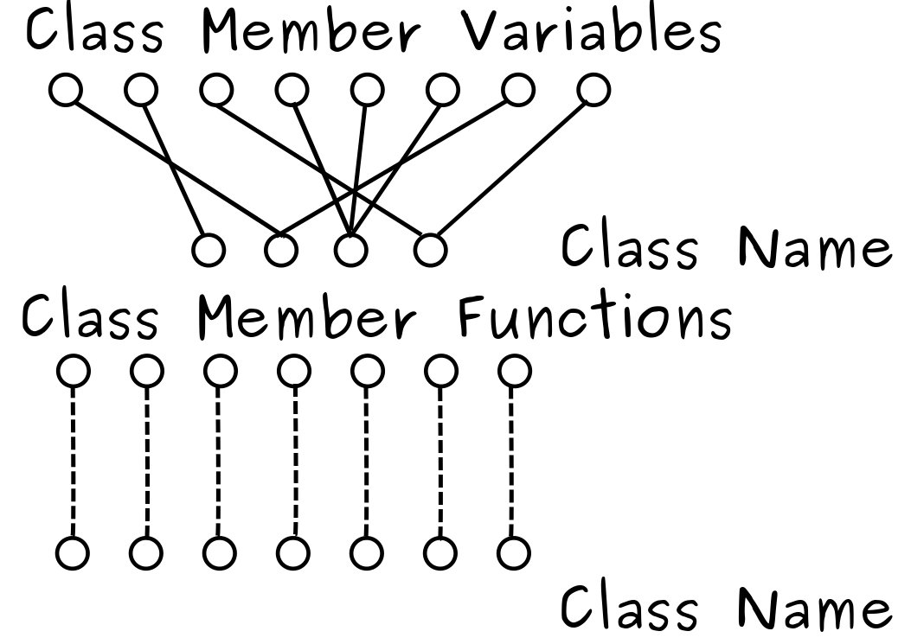
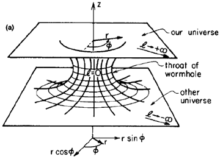
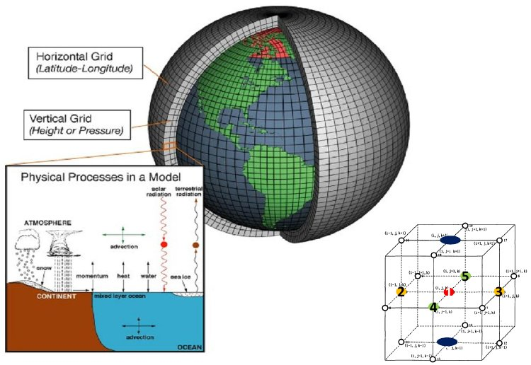
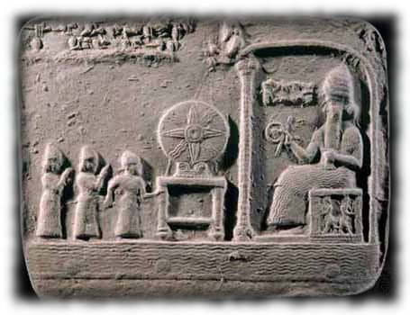
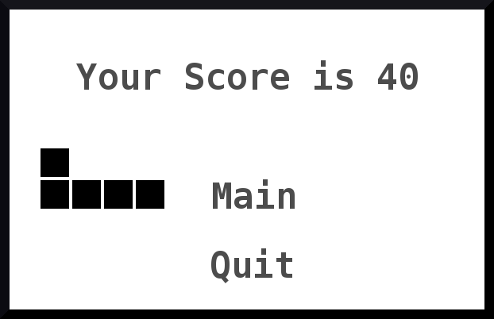
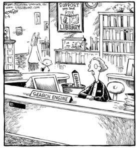

Projects,
Mini Search Engine (on-going)
A P2P implementation of a Google-like search engine with distributed, scalable crawling and indexing with ranking.
Current Progress 80%
C++ Code Analyzer (Aug '10)
A program written by a four-person group that analyzed function calls and variable references. Group leader, hands-on experience with text parsing.

C Compiler (Dec '12)
;; prologue for fun
fun ADD SP, SP, -1
ADD SP, SP, -1
STR R7, SP, 0
ADD SP, SP, -1
STR FP, SP, 0
ADD FP, SP, -1
;; body of fun
;; return 4
AND R0, R0, 0
ADD R0, R0, 4
STR R0, FP, 3
;; epilogue for fun
LDR FP, SP, 0
ADD SP, SP, 1
LDR R7, SP, 0
ADD SP, SP, 1
ADD SP, SP, 1
RET
A program converting C code to educational assembly language LC-3, with emphasis on stack, frame pointer and stack pointer.
RiemannCalc Package (Dec '11)
Tensor calculation by hand may take hours, while double checking the result is even longer. This is a Wolfram Mathematica symbolic computation package for Christoffel Coefficients and other quantities related to Differential Geometry and General Relativity. Reduced the computation time to seconds.

Atmospheric Simulation on Distributed System (May '11)

First started with OpenMP in C, later on rewritten with MPI. 4-dimension ''matrix''(tensor) numerical calculation, 10 GB scale data management, multi-core programming experience.
Hammurabi (Sep '12)
Hammurabi, a classic text-based computer game. The player needed to increase the wealth of the country by managing land and resource. Python development experience.

Eliza (Oct '12)
Eliza, a replica of the early example of primitive natural language processing, simulated a Rogerian therapist by repeating what it was told with appropriate substitutions and giving reasonable responses. String manipulation, program design.
Snake (Nov '12)
Snake, a classic game in arcades and Nokia phones. The controls over speed, difficulty and world size were provided. Observer/Observable development, MVC model, computer animation, Swing experience.

Virtual Library System (Oct '12)

Virtual Library System, a software for the library check-in/check-out system. Librarian as the user could also issue library cards, send out overdue notices for each patron. A calendar system was also maintained inside this program. Object-Oriented Python experience.